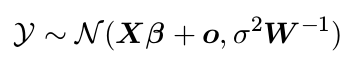
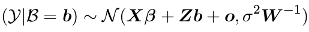
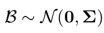

Elméleti bevezető
A kevert modellek lényege
- Alapprobléma: egy (függő) változó értékét akarjuk magyarázni (független) kovariáns változók függvényeként
pl: Hogyan magyarázza a biológiai nem (fiú/lány) a tanulók matematika-eredményét?

Praktikus probléma: a megfigyelési egységeink jellemzően nem függetlenek
pl: A vizsgálatot 20 iskolában végeztük, iskolánként 20 tanulóval.
Megoldás: vegyük figyelembe a függőséget okozó KATEGORIÁLIS változó miatti variabilitást


Fix és random hatások
- fix hatás (Beta):
- az adott változó valamennyi szintjét mérjük, vagy a szinteket kísérletileg manipuláljuk
- a szintek reprodukálhatók
- a fix hatások paramétereit becsüljük (akárcsak a sima regresziónál)
- random hatás (b):
- a kérdéses változó szintjei csak egy random mintának tekinthetők egy közelítőleg végtelen populációból
- a random hatások NEM paraméterek (valójában látens random változók a modellben) -> a modell a random hatások kovariancia-mátrixát becsli
- fontos: valójában nem feltétlenül egyértelmű, hogy egy adott változót fix vagy random hatásként kell szerepeltetni (az adott vizsgálattól is függ)
- a kevert modellben mindenképpen van minimum egy fix-hatás paraméter (a konstans) és egy random hatás
- a random hatás modellezhető random konstansként (intercept) és/vagy random meredekségként (slope):
- pl. a vizsgált iskolák jelentősen eltérnek a jellemző matekjegyekben -> random konstans
- pl. a vizsgált iskolák eltérnek abban, hogy milyen különbség van a fiúk és lányok jellemző matekjegyei között -> random meredekség
- több random hatásnál megkülönböztethetünk keresztezett és beágyazott (többszintű, hierarchikus) random hatásokat is (lásd később)
- az ún. hierarchikus modellek a kevert modellek speciális fajtái (csak beágyazott random hatásokat tartalmaznak, keresztezett hatásokat nem)
- a kevert (hatások) modell (= mixed-effects model) nem keverendő össze az ismételt méréses varianciaanalízisnél használt kevert modellel (-> amely személyen belüli és személyek közötti hatások együttes jelenlétére vonatkozik)
Előnyök és hátrányok
Előnyök:
- nincsen szükség átlagolásra -> egyedi megfigyelések szintjén megjelenő hatások is modellezhetők
- több random hatás is egyidejűleg vizsgálható
- kiegyensúlyozatlan (unbalanced) dizájn nem probléma
Hátrányok:
- modellépítés igen komplex lehet -> az ilyen modellek futtatása nagyon CPU-igényes
- a random hatások szintjeinek száma nagyon minimum 5, de inkább min. 10 legyen